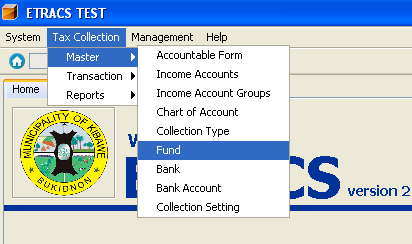
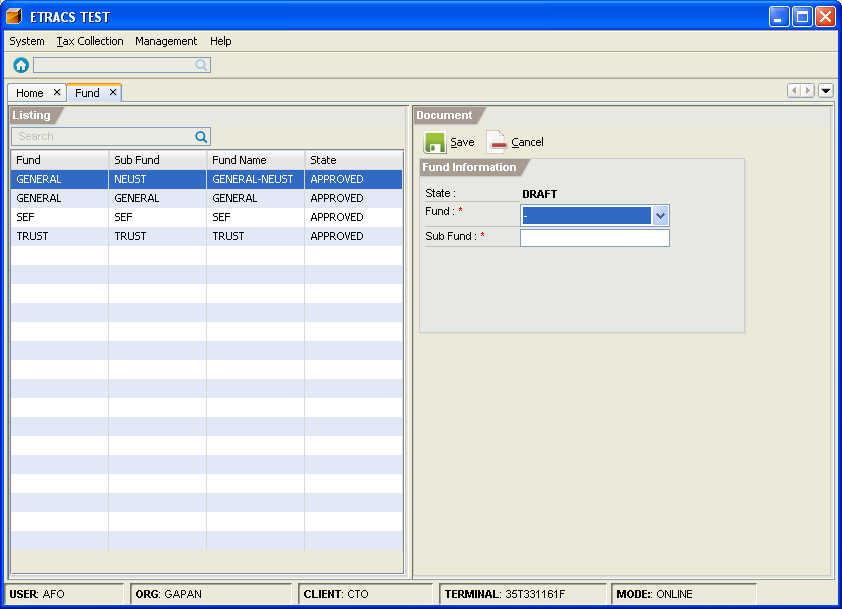
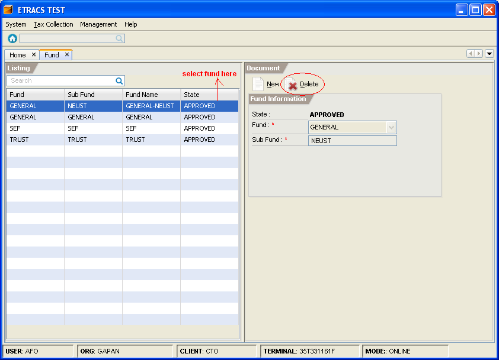

Managing Funds
This facility enables you to add and delete a sub fund.
How to add a sub fund?
1. On the menu toolbar, go to "Tax Collection -> Master -> Fund" item.

2. Click on the "New" button.
3. Fill in the fund information.

4. Click on the "Save" button.
5. Click on the "Approve" button.
How to delete a sub fund?
1. Go to "Fund" page. (Please refer to Adding a Sub Fund - Step 1)
2. Select the sub fund item from the list, and click on the "Delete" button.
